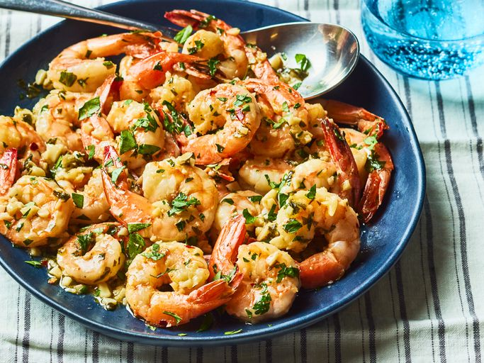

Simple Garlic Shrimp

Give this garlic shrimp recipe a try if you like shrimp and love garlic. It's fast and
delicious, and I hope you enjoy it!
Ingredients
- 1 ½ tablespoons olive oil
- 1 pound shrimp, peeled and deveined
- Salt to taste
- 6 cloves garlic, finely minced
- ¼ teaspoon red pepper flakes
- 3 tablespoons lemon juice
- 1 tablespoon caper brine
- 2 tablespoons cold butter, cut into 4 equal pieces, divided
- ⅓ cup chopped flat-leaf parsley, divided
- 1 teaspoon water, or as needed
Steps
- Step 1
Gather all ingredients.
- Step 2
Heat olive oil in a heavy skillet over high heat until it just begins to smoke. Place
shrimp in an even layer on the bottom of the pan and cook for 1 minute without
stirring.
- Step 3
Season shrimp with salt; cook and stir until shrimp begin to turn pink, about 1
minute.
- Step 4
Add garlic and red pepper flakes; cook and stir for 1 minute.
- Step 5
Stir in lemon juice, caper brine, 1 piece of butter, and 1/2 of the parsley; cook
until butter has melted, about 1 minute.
- Step 6
Reduce heat to low and stir in remaining 3 pieces butter. Cook and stir until
butter has melted, sauce is thick, and shrimp are pink and opaque, 2 to 3
minutes.
- Step 7
Remove shrimp with a slotted spoon and transfer to a bowl; continue to cook
butter sauce, adding water, 1 teaspoon at a time, if too thick, about 2 minutes.
- Step 8
Season with salt to taste; serve shrimp topped with the pan sauce and
remaining parsley. Enjoy!
Home